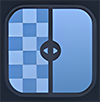

추천 앱
최고의 앱을 추천합니다.

Hidden Mark
포렌식 워터 마크 기술을 사용하여 사용자의 컨텐츠를 안전하게 보호할 수 있습니다.
Hidden Code
포렌식 워터 마크 기술을 사용하여 사용자의 컨텐츠를 안전하게 보호할 수 있습니다.
어플리케이션
다양한 어플리케이션을 소개합니다.
Deep Mark
포렌식 워터 마크 기술을 사용하여 사용자의 컨텐츠를 안전하게 보호할 수 있습니다.
ReMark
포렌식 워터 마크 기술을 사용하여 사용자의 컨텐츠를 안전하게 보호할 수 있습니다.
생산성 앱
업무 효율을 높이는 앱입니다.
Deep Mark
포렌식 워터 마크 기술을 사용하여 사용자의 컨텐츠를 안전하게 보호할 수 있습니다.
ReMark
포렌식 워터 마크 기술을 사용하여 사용자의 컨텐츠를 안전하게 보호할 수 있습니다.
좋아요 앱
사용자들이 좋아하는 앱입니다.
Poison App
포렌식 워터 마크 기술을 사용하여 사용자의 컨텐츠를 안전하게 보호할 수 있습니다.
Safe Mark
포렌식 워터 마크 기술을 사용하여 사용자의 컨텐츠를 안전하게 보호할 수 있습니다.